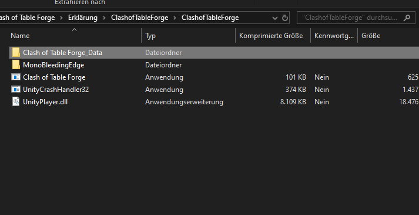
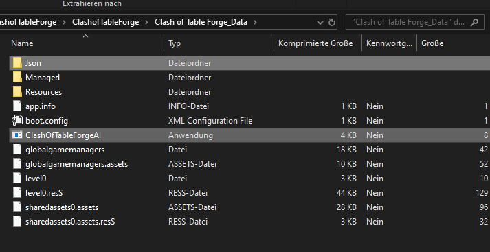
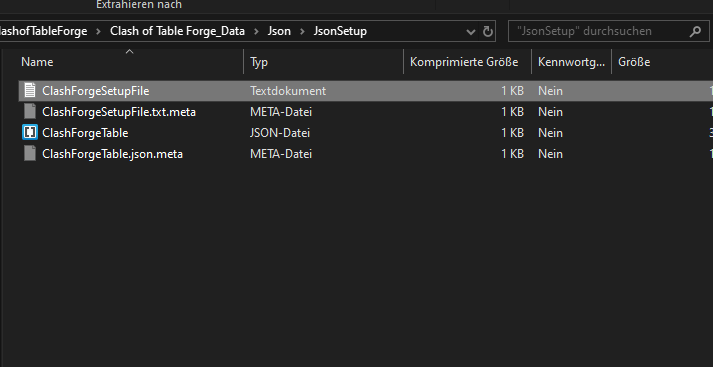
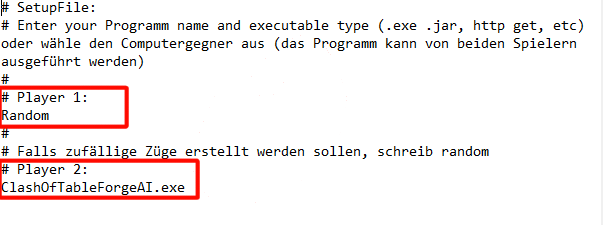

Willkommen bei der coolsten Challenge überhaupt!
Führt eure Truppen an und besiegt die Truppen eures Gegners. Zwei mächtige Armeen stehen sich gegenüber. Sie müssen den Gegner durch strategisches Handeln schnell überrumpeln und schlagen. Eure Aufgabe ist es, eure Einheiten mit einem von euch entwickelten Algorithmus zu steuern und den Gegner zu besiegen.
Das Spiel besteht aus einem Spielbrett (Table)
, auf dem die Einheiten (Units) gegeneinander kämpfen.
Auf dem Brett gibt es Wände (Walls), die nicht überschritten werden können.
Das Spiel liest das Brett aus einer Json Datei (ClashForgeTable.json) aus.
Die Einheiten werden mit Aktionen bewegt, die aus Json Dateien gelesen werden.
Die Einheiten können sich bewegen, oder angreifen.
{
"width": 10,
"height": 10,
"players": [{}]
"walls": [{}]
}
Breite, Höhe und ein Array für zwei Spieler.
{
"tag": 1,
"units": [{}]
}
Tag des Spielers und ein Array für Einheiten.
{
"tag": 11,
"live": 100,
"xpos": 1,
"ypos": 2
}
Jede Einheit hat einen Tag, das aktuelle Leben und die Position. Der Tag beginnt mit dem Spieler-Tag.
{
"xpos": 5,
"ypos": 6
}
Ein Wandobjekt hat eine Position.
"actions": [
{
"causeunit": 11,
"impactunit": 0,
"actiontype": "move",
"par1": "-1",
"par2": "0",
"par3": ""
},
{
"causeunit": 24,
"impactunit": 13,
"actiontype": "attack",
"par1": "",
"par2": "",
"par3": ""
}]
Das Actions Array besteht aus Bewegungs- "move" oder Angriffszügen "attack".
Jeder Zug hat eine ausführende Einheit ("causeunit") und eine getroffene Einheit ("impactunit"). Zu jedem Zug gibt es zusätzliche Parameter, die gegeben werden können ("par1","par2" und "par3").
Es können beliebig viele Züge in das Array geschrieben werden. Allerdings kann jede Einheit nur einen Zug pro Runde ausführen.
Die "causeunit" wird mit dem Vector, der sich aus "par1" und "par2" ergibt, verschoben. Wenn die Unit auf x=4, y=6 steht und einen "move" Zug mit den Parametern par1=-1, par2=1 bekommt, dann zieht sie auf x=3, y=7. Die Figur kann maximal ein Feld horizontal, vertikal oder diagonal laufen.
Die "causeunit" führt einen Angriff auf "impactunit" aus. Eine Einheit kann nur angegriffen werden, wenn sie in Schrittweite ist.
Also wenn die andere Figur ein Feld horizontal, vertikal oder diagonal entfernt ist.
Eure Aufgabe ist es eine KI zu erzeugen, die eine Liste an Actions erstellt, die dann ausgeführt werden. Für jeden Zug wird eine neue Actions Liste erwartet.
Ihr liest die Table Datei und gebt eine Actions Datei zurück.
Die Visualisierung liest aus Json ein und gibt in Json aus. Daher sollte euer Programm auf Windows per Kommandozeile ausführbar sein. Oder es ist ein Script auf einem Server, welches die Actions Json Datei per http request liefert.
Euer Programm wird mit einem Parameter, der Spielernummer aufgerufen.
Ihr lest aus dem Ordner "Json/JsonOut/" die Datei "ClashForgeTable.json", um das aktuelle Spielbrett zu erhalten.
Euer Programm muss dann eine Datei mit dem Namen: "ClashForgeAction[Eure Spielernummer].json" in den Ordner:"Json/JsonIn/" schreiben. (bsp. Für Spieler 1 :"ClashForgeAction1.json")
Es wird ein http get request gemacht, mit der Spielernummer und der Table Json als Parameter.
Das Programm wartet auf eine Antwort mit der Actions Liste als Json.)
|
Zum Testen muss euer Programm in dem Ordner Clash of Table-Forge_Data sein: |
 |
|
Wenn euer Programm im Ordner vorhanden ist(wie ClashOfTableForgeAI.exe), muss die ausführbare Datei noch im Projekt markiert sein. |
 |
Im Json Ordner ist der JsonSetup Ordner, der ein Setup Textfile beinhaltet.
|
|
 |
|
Fügt den Namen der Datei(mit Dateiendung) im Setup-File als Player ein.
|
 |
Es kann auch ein Gegner gewählt werden, der nur Zufallszüge erstellt, indem das Wort Random als Spieler gewählt wird.
Nun kann das Spiel gestartet werden.
Mit Enter werden die Spieler und das Spielbrett geladen und mit Escape wird das Programm beendet.
Seht zu, wie die Computer sich bewegen und wie das Spiel verläuft.
Wenn ein Spieler besiegt ist, oder ein Programm keinen Zug berechnet, ist das Spiel vorbei.